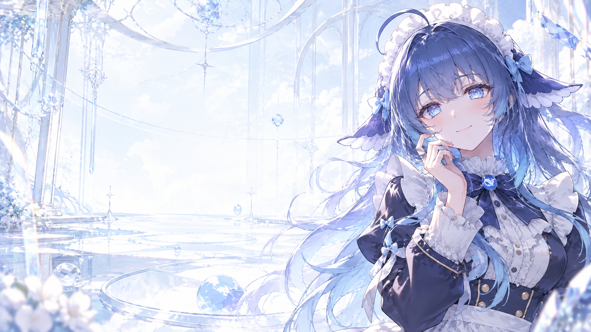
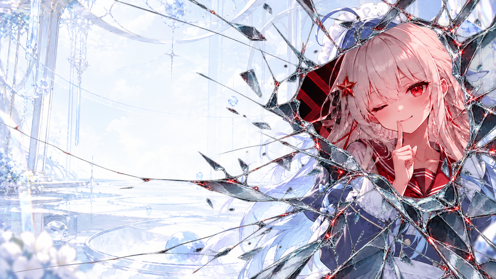
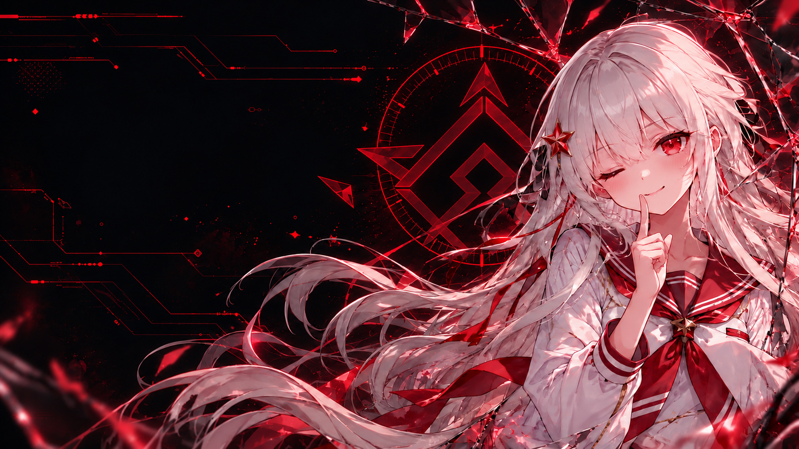

MIRROR PROTOCOL / MOTION / 2.3.1
DS → 原图碎镜闪现 → 长征机
DS较慢显现碎镜，落镜时短震后停顿；保留少量不规则条纹，再由轮廓拖尾和局部像素置换交接长征机。全程3.6秒，圆形按钮固定，人物沿用原图。
加载原图…



DEEPSEEK / ORIGINAL
0.0 / 3.6 s
可点击阶段检查原图，或重播完整3秒切换。人物沿用原图；故障来自短暂像素置换与真实轮廓残像，结束回到未变形原图；未应用到真实 Codex。